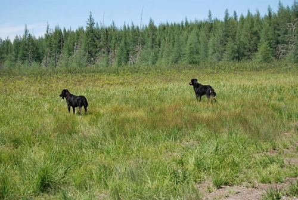
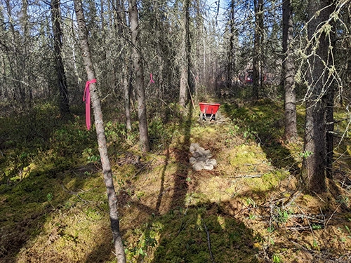

Les Photos
2010
Première exploration de la terre et un peu de camping. Les finances ne permettait pas encore de faire l'achat.



2022
L'achat de la terre et le début de l'aventure. On a fait un petit sentier en gravel. Peu de moyens on a tout transporté en brouette et pelleter à la main.

")
2023
L'été du gros feu de forêt à Lebel-sur-Quévillon, dans le Nord du Québec, les activités extérieurs étais très limité. La terre a été cadastré. Une chance j'avais installé une caméra de chasse.
2024
Une grosse dépense pour travailler sur la terre et pour aménager un sentier plus solide et plus large, surtout après avoir resté prit dans la boue.